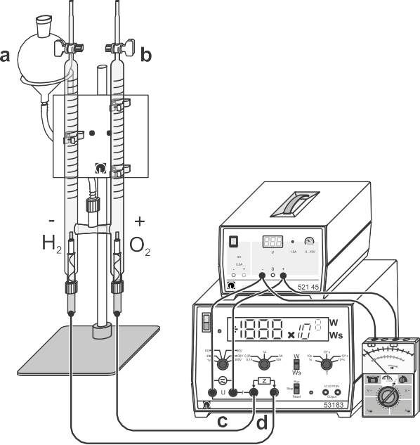

Faradey doimiysini aniqlaş
1Işning maqsadi va kutilayotgan natijalar
Suvni elektroliz qilib vodorod oliş va uning hajmini ölçaş, özgarmas kuçlaniş \(U_0\) da elektr tokining işi \(W\) ni joul-vattmetr bilan ölçaş hamda Faradey doimiysi \(F\) ni hisoblaş.
Fan dasturidagi ta’lim natijalari: TN2 — Fizik hodisalarni tajribada namoyiş qiliş, ölçov işlarini bajariş va natijalar aniqligini ta’minlaş; TN5 — Ölçaş natijalarini matematik va grafik qayta işlaş, tizimli va tasodifiy xatoliklarni hisoblaş; TN6 — Tajriba natijalarini nazariya bilan soliştiriş, sabab-oqibatni tahlil qiliş va ilmiy asoslangan xulosa çiqariş; TN7 — Elektr zanjirlari va yuqori kuçlanişli qurilmalar bilan işlaşda texnika xavfsizligiga rioya qiliş; TN15 — Ölçaşlarning absolyut, nisbiy xatoliklari va statistik noaniqliklarni hisoblaş.
2Kerakli jihozlar
- Suvni elektroliz qiliş qurilmasi (Gofman apparati: H₂ va O₂ uçun darajalangan nayçalar, gaz jömraklari, darajalaş idişi) va patnis
- Joul-vattmetr
- Özgarmas quvvat manbai 0…±15 V (qutblar orasida 30 V gaça)
- Voltmetr (özgarmas tok, \(U\le30\) V)
- Termometr (−10 °C … +40 °C), barometr
- Suyultirilgan sulfat kislota (500 ml), ulaş simlari
3Nazariy qism
15.1. Elektroliz va Faradey doimiysi
Elektrolizda tok ötişi kimyoviy ajraliş bilan birga boradi. Ajralgan modda miqdori elektrolit orqali ötgan zaryad \(Q\) ga proporsional (Faradeyning birinçi qonuni). Faradey doimiysi — 1 mol elektronlar zaryadi; u elementar zaryad \(e\) va Avogadro soni \(N_A\) bilan boğlangan:
$$F=N_A\,e.\qquad(15.1)$$Ajralgan modda miqdori \(n\) (mol) va ionlar valentligi \(z\) uçun:
$$Q=n\,F\,z.\qquad(15.2)$$15.2. Vodorod hajmi orqali aniqlaş
Elektrolizda ajralgan vodorod taşqi bosim \(p\) va xona harorati \(T\) da yiğiladi va hajmi \(V\) ölçanadi. Vodorod molekulalari miqdori ideal gaz holat tenglamasidan:
$$n_1=\frac{pV}{RT},\qquad R=8{,}314\ \text{J/(mol·K)}.\qquad(15.3)$$Har bir H⁺ ioni bitta elektron bilan neytrallanadi (\(z=1\)); 1 mol H₂ oliş uçun 2 mol elektron kerak:
$$n=2\,\frac{pV}{RT}.\qquad(15.4)$$Bir vaqtda özgarmas kuçlaniş \(U_0\) da bajarilgan iş \(W\) ölçanadi, undan zaryad:
$$Q=\frac{W}{U_0}.\qquad(15.5)$$(15.2), (15.4) va (15.5) dan:
$$F=\frac{1}{2}\cdot\frac{W\,R\,T}{U_0\,p\,V}.\qquad(15.6)$$Aniqroq hisobda \(p\) örniga vodorodning parsial bosimi \(p-p_{\text{bug‘}}\) olinadi (\(p_{\text{bug‘}}\approx2{,}6\) kPa, 22 °C da).

4Işni bajariş tartibi
1. Elektroliz qurilmasini tayyorlaş
- Suyuqlikni gaz bilan töyintiriş uçun manbani yoqing, \(U_0\) ni 30 V ga (manbaning musbat va manfiy qutblari orasida) örnating va 5 daqiqa davomida elektroliz borişini kuzating. Söng \(U_0\) ni öçiring.
- Ikkala gaz jömragini ehtiyotkorlik bilan oçing; darajalaş idişini kötarib, kislota sathini gaz jömraklari balandligigaça keltiring. Ikkala jömrakni yoping.
2. Joul-vattmetrni sozlaş
- Joul-vattmetrni yoqing va 15 daqiqa qizişini kuting.
- Vaqt doimiysini 1 s, kuçlaniş diapazonini 30 V, vazifa tanlagiçni “Ws” ga qöying.
- Nolni sozlaş: boşqaruv dastagini “Reset”, söng “Run” holatiga qöying; displeyni nol moslagiç bilan barqarorlaştiring; dastakni yana “Reset” ga qaytaring.
3. Ölçaşlar
- \(U_0\) ni 30 V ga örnating.
- H₂ nayçasida (manfiy qutb) gaz ajralişini kuzating. Darajalaş idişini töxtovsiz pastlatib boring, şunda idişdagi suyuqlik sathi H₂ nayçasidagi sath bilan bir xil bölsin (gaz atmosfera bosimida böladi).
- Suyuqlik sathi 5 ml belgisiga kelganda joul-vattmetr dastagini “Run” ga qöying.
- Sath 25 ml belgisiga kelganda \(U_0\) ni öçiring va joul-vattmetrdagi iş \(W\) ni yozing.
- Xona harorati \(T\) va atmosfera bosimi \(p\) ni yozing. Tajribani 2–3 marta takrorlang.
15.1-jadval. Faradey doimiysini aniqlaş
| № | V (H₂), ml | W, J | U₀, V | Q = W/U₀, Kl | p, kPa | T, K | n = 2pV/(RT), mol | F, Kl/mol | ε, % |
|---|---|---|---|---|---|---|---|---|---|
Jadval katakçalariga bevosita yoziş mumkin (ma’lumotlar sahifa yopilganda saqlanmaydi — hisobotga köçirib oling).
5Natijalarni qayta işlaş va xatoliklar
Har bir tajriba uçun \(Q=W/U_0\), \(n=2pV/(RT)\) va \(F=Q/n\) hisoblanadi; örtaça qiymat jadvaldagi \(F=96\,485\) Kl/mol bilan soliştiriladi. Söng elementar zaryad \(e=F/N_A\) (\(N_A=6{,}022\cdot10^{23}\) mol⁻¹) topiladi.
Nisbiy xatolik: \(\dfrac{\Delta F}{F}=\dfrac{\Delta W}{W}+\dfrac{\Delta U_0}{U_0}+\dfrac{\Delta V}{V}+\dfrac{\Delta p}{p}+\dfrac{\Delta T}{T}\). Sistematik xatolik manbalari: vodorodning qisman eruvçanligi, suv buğining parsial bosimi, sathlar tengligining aniq ta’minlanmasligi.
Xatoliklar nazariyasi: laboratoriyaga kiriş bölimi.
Takroriy ölçaşlar kalkulyatori
Eng kiçik kvadratlar usuli (töğri çiziq y = kx + b)
6Namunaviy hisob
Şart. H₂ hajmi 5 ml dan 25 ml gaça ortdi (\(V=20\) ml), joul-vattmetr \(W=4{,}78\) kJ körsatdi, \(U_0=30{,}0\) V, \(p=101{,}3\) kPa, \(t=22\,^\circ\)C. \(F\) va \(e\) ni toping.
Yeçimni körsatiş
\(T=295\) K. \(Q=W/U_0=4780/30=159{,}3\) Kl. \(n=2pV/(RT)=2\cdot101300\cdot2\cdot10^{-5}/(8{,}314\cdot295)=1{,}652\cdot10^{-3}\) mol. \(F=Q/n=9{,}64\cdot10^4\) Kl/mol (jadvaldagidan 0,05 % farq). \(e=F/N_A=1{,}60\cdot10^{-19}\) Kl.
7Virtual laboratoriya: Faradey doimiysi (suv elektrolizi)
- Mis kuporosi eritmasidan 1 amper tok 30 daqiqa ötmoqda. Katodda qariyb 0,59 gramm mis ajraladi, bundan Faradey doimiysi 96 ming kulon taxminan.
- Kumuşni tanlaymiz. Ioni bir valentli va molyar massasi katta bölgani uçun xuddi şu zaryadda 3,4 marta köp metall ajraladi.
- Tok unumdorligi 90 foizga tuşsa, ya’ni tokning bir qismi vodorod ajralişiga sarflansa, hisoblangan Faradey doimiysi 11 foiz katta çiqadi. Bu tizimli xatolik.
- Namoyiş tugadi. Endi parametrlarni özingiz özgartirib, natijalarni jadvalga yozing.
Virtual laboratoriyadagi topşiriqlar
- Tok kuçini 2 marta oşiring: ajralgan massa qanday özgaradi?
- Kumuşni tanlang (\(z=1\), \(M=107{,}9\)): bir xil zaryadda massa neça marta katta?
- Tok unumdorligini 90 % ga tuşiring va bu hisoblangan \(F\) ga qanday ta’sir qilişini köring.
Model öquv maqsadida soddalaştirilgan. “Asbob körsatişi” deb belgilangan qiymatlarga real ölçaşdagi kabi kiçik tasodifiy çetlaniş qöşilgan — takroriy ölçaşlar uçun foydalaning.
8Texnika xavfsizligi
- Sulfat kislota bilan işlaşda himoya közoynagi va qölqop taqing; kislota teriga tuşsa, köp suv bilan yuving.
- Vodorod va kislorod aralaşmasi portlovçi — gaz jömraklari yonida olov işlatmang, gazlarni xonaga oçiq olovli joyda çiqarmang.
- Ulaşlarni faqat manba öçirilgan holda bajaring.
- Işdan keyin qurilmani öqituvçi körsatmasi böyiça tozalang.
9Himoya uçun nazorat savollari
- Faradey doimiysining fizik ma’nosi nima?
- Faradeyning elektroliz uçun birinçi qonunini ta’riflang.
- Faradeyning elektroliz uçun ikkinçi qonunini ta’riflang.
- Faradey doimiysi Avogadro soni va elementar zaryad bilan qanday boğlangan?
- Ajralgan vodorod miqdori ideal gaz holat tenglamasi yordamida qanday aniqlanadi?
- Tajribada elektroliz jarayonida ötgan zaryad miqdori qanday aniqlanadi?
Blits-sörov
- Lorens kuçi deganda nimani tuşunasiz?
- Faradey sonining fizik ma’nosi nima?
- Elektroliz deb qanday hodisaga aytiladi?
- Elektrolitlar deb nimaga aytiladi?
- Elektrolitik dissotsiatsiya qanday jarayon? Rekombinatsiya-çi?
- Nima uçun harorat ortişi bilan elektrolitlarning qarşiligi kamayadi?
- Faradeyning birinçi va ikkinçi qonunlarini ta’riflang va formulasini yozing.
- Elektroliz texnikada qayerlarda qöllaniladi?
10Nazorat testi (10 savol, öz-özini tekşiriş)
1. Faradey doimiysining qiymati:
2. \(F=N_Ae\) munosabatidan nima topiladi?
3. 1 mol H₂ hosil qiliş uçun neça mol elektron kerak?
4. Elektrolizda vodorod qaysi elektrodda ajraladi?
5. Joul-vattmetr \(W=3000\) J, \(U_0=30\) V körsatdi. Ötgan zaryad:
6. Ajralgan vodorod miqdori qaysi tenglamadan topiladi?
7. Darajalaş idişi nima uçun pastlatib boriladi?
8. Elektrolitlarda tokni nima taşiydi?
9. Faradeyning birinçi qonuni:
10. Hajm ölçaşda suv buği parsial bosimini hisobga olmaslik F ni qanday özgartiradi?
Bu test öz-özini tekşiriş uçun; rasmiy oraliq nazorat HEMIS’da ötkaziladi.
11Sun’iy intellekt bilan işlaş
Men pedagogika oliygohining fizika yönalişi talabasiman. “Faradey doimiysini aniqlaş” laboratoriya işini bajardim. 1) Mening ölçaş jadvalimni tekşir: birliklar, xonalar soni, aniq xato yozuvlar. 2) Natijani qayta işlaş bosqiçlarini tuşuntir (örtaça, Styudent usuli, bilvosita ölçaş xatoligi), lekin hisobni özim bajaraman. 3) Natijam jadval qiymatidan farq qilsa, mumkin bölgan tizimli xatolik manbalarini sanab ber. 4) Himoya uçun 3 ta savol ber. Çeklov: formulalarni LaTeX’da yoz, işonçing komil bölmagan joyni oçiq ayt. [Şu yerga ölçaş jadvalingizni qöying]
12Adabiyotlar
- [2] Toşxonova J.A. va boşq. Fizikadan praktikum. Elektr va magnetizm. — Toşkent, 2006.
- [3] Ölmasova M. va boşq. Fizika (Elektr, optika, atom va yadro fizikasi). — Toşkent, 2007.
- [5] Nurmatov N. Elektr va magnetizm fanidan praktikum. — 2021.
- Halliday D., Resnick R., Walker J. Fundamentals of Physics. 12th ed. — Hoboken: Wiley, 2021.
- Taylor J.R. An Introduction to Error Analysis. 2nd ed. — Sausalito: University Science Books, 1997.
[1]–[5] — fan dasturidagi asosiy, [Q…] — qöşimça adabiyotlar raqamlanişi. Xalqaro darsliklar çuqurlaştiriş uçun tavsiya etiladi.
Öqituvçi uçun: 80 daqiqalik maşğulot rejasi
| Vaqt | Bosqiç | Faoliyat |
|---|---|---|
| 0–10 | Kiriş nazorati (dopusk) | Himoya savollaridan 2–3 tasi; xavfsizlik böyiça yöriqnoma; jurnalga qayd |
| 10–25 | Yiğiş va sozlaş | Zanjir/qurilmani yiğiş, öqituvçi tekşiruvi; jihoz yetişmasa — virtual laboratoriya |
| 25–55 | Ölçaş | Jadvalni töldiriş, takroriy ölçaşlar; virtual model bilan soliştiriş |
| 55–70 | Qayta işlaş | Grafik, eng kiçik kvadratlar, xatoliklar; kalkulyatorlar bilan tekşiriş |
| 70–80 | Himoya | Xulosa, nazorat savollari; DF bali (JN tarkibida) |
Maşğulot: L21 (fan dasturi böyiça). Batafsil: öqituvçi qöllanmasi.